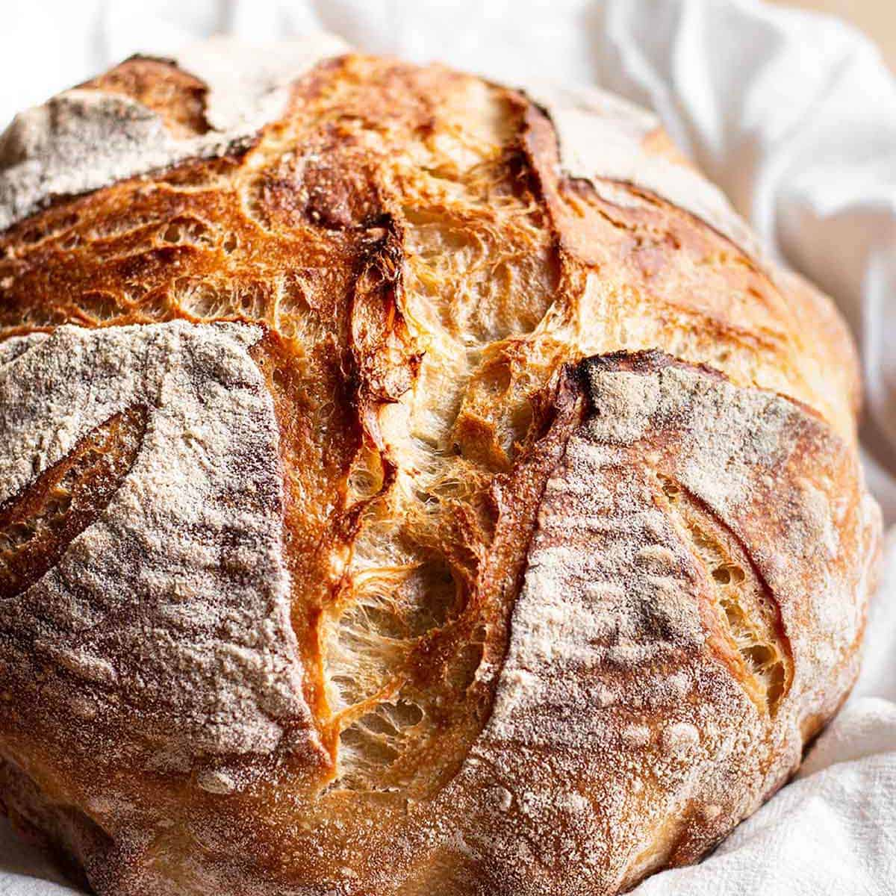

Overnight Sourdough Bread

Ingredients
- 500g white flour
- 350g-360g room temperature water
- 10g salt
- 80g sourdough starter
Instructions
- Mix the water, sourdough starter, floor and salt in a bowl using the "pinch and fold" technique. Cover the bowl.
- Let the dough rest for 20-30 minutes for the autolyse process.
- Stretch and fold the dough. Apply 4 folds in total, with the first fold about 30 minutes after mixing, and the other folds every 20-30 minutes. Cover the bowl after each stretch and fold.
- When the dough has tripled in volume (around 5 hours), shape it into a ball and place it upside down in a banneton. Cover the banneton.
- Refrigerate the dough overnight.
- The next day, preheat the oven to 475°F (245°C) for 50 minutes, and remove the dough from the fridge.
- Once the oven is preheated, place the banneton upside down on a baking sheet and score the dough.
- Place the dough in a Dutch oven with the lid on and bake for 30 minutes.
- After 30 minutes, remove the lid and bake for another 20 minutes, or until the crust is medium-dark brown.
- Check after 10 minutes of baking uncovered in case your oven runs hot.
Home